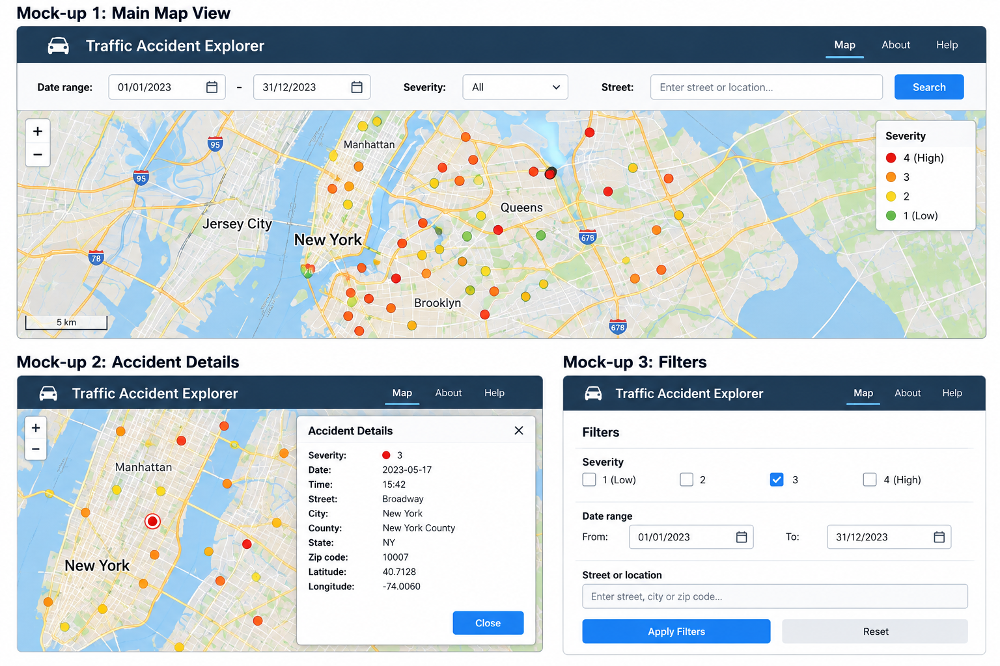

The application will allow users to explore traffic accidents in New York City using the selected dataset.
The main purpose of the application is to provide a simple way to visualize traffic accidents, filter them according to different criteria, and inspect relevant information about each accident.
The expected user interface will contain a map where the traffic accidents are represented according to their geographic location.
The interface will also provide filtering and search options so that users can select accidents according to criteria such as severity, date or street.
When the user selects an accident, the application will display detailed information about that accident.
The following mock-up represents the expected user interface of the application.
